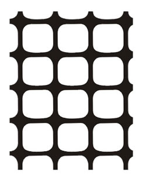
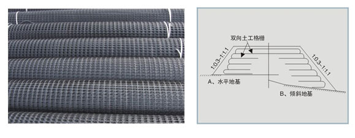

服务热线：0510-87597688

咨询热线
0510-87597688双向土工格栅是以聚丙烯、高密度聚乙烯为原料，经特别的挤压，双向拉伸而制成。可减少所需的结构性填土，均匀荷载分布，具有较高的双向拉伸模量和抗拉强度，较高的抗机械破坏能力，耐久能力。主要适用于软土地基处理和加筋土结构。
施工要点：
开挖基床：设置砂垫层(高差不大于10cm)，碾压成平台，铺设格栅，纵轴向应于主要受力方向一致，纵向搭接15-20cm，横向10cm，搭接处用塑料带绑扎，并在铺设的格栅每隔1.5-2m用U型钉固定地面，铺设的土工格栅应及时回填土料，铺设的土工格栅层数视技术要求。
测试指标 ：
| 产品规格 | 纵/横向拉伸强度 （KN/m） | 纵/横2%伸长率时的拉伸强度（KN/m） | 纵/横5%伸长率时的拉伸强度（KN/m） | 纵/横标称伸长率/% |
| TGSG1515 | ≥15.0 | ≥5.0 | ≥7.0 | ≤15.0/13.0 |
| TGSG2020 | ≥20.0 | ≥7.0 | ≥14.0 | |
| TGSG2525 | ≥25.0 | ≥9.0 | ≥17.0 | |
| TGSG3030 | ≥30.0 | ≥10.5 | ≥21.0 | |
| TGSG3535 | ≥35.0 | ≥12.0 | ≥24.0 | |
| TGSG4040 | ≥40.0 | ≥14.0 | ≥28.0 | |
| TGSG4545 | ≥45.0 | ≥16.0 | ≥32.0 | |
| TGSG5050 | ≥50.0 | ≥17.5 | ≥35.0 |

试验方法
一.取样
在同批塑料土工格栅产品中，随机抽取1卷，截取全幅宽1M长为样品。
二.外观
在自然光线下距产品0.5M目测。
三.尺寸偏差
将塑料土工格栅展平测量宽度并计算偏差。
四.每延米拉伸强度的检测
试样状态调节与试验的标准环境。样品应在温度（20±2）℃ 环境下至少12小时，并在该环境状态下进行试验。
五.设备
设备为拉力试验机，读数精度为1.0N，量程使用范围为10%～90%。
六.样品的制备
双向塑料土工格栅采用单肋法测试时，裁取试样时将样品两侧面去掉两个肋后，在宽度方向均匀裁取10个试样。试样长度至少包括两个完整单元，且长度不小于250mm。
蠕变性能
双向塑料土工格栅用于长期受力加筋工程时，应进行蠕变性能试验。